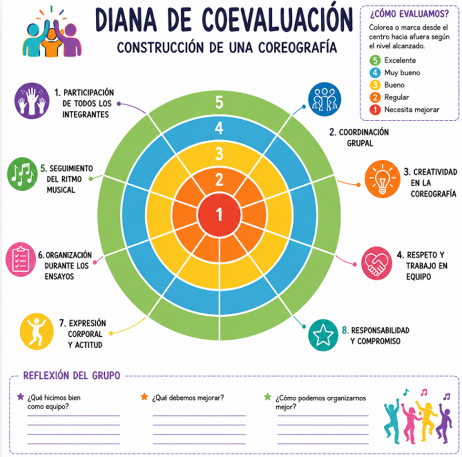

En la Fase Aplicación, representación de la coreografía “Moveyou”, por grupos, voy a emplear el instrumento de evaluación, LISTA DE CONTROL. Que constará de los siguientes ítems de observación:
1. Organización previa
☐ Verificar posiciones y formaciones.
☐ Tener una copia de la música en varios dispositivos.
☐ Confirmar horario y orden de actuación.
2. Ensayos
☐ Practicar sincronización con la música.
☐ Corregir tiempos y desplazamientos.
☐ Ensayar expresividad y actitud corporal.
☐ Practicar saludos finales.
Durante la representación
☐ Mantener la coordinación del grupo.
☐ Seguir el ritmo musical.
☐ Mantener buena postura corporal.
☐ Adaptarse si ocurre algún error sin detenerse.
☐ Respetar el espacio entre compañeros.
Finalización
☐ Salir ordenadamente del escenario.
☐ Recoger materiales y accesorios.
☐ Felicitar y motivar al grupo.
☐ Evaluar aspectos positivos y mejoras para futuras actuaciones.
Con la aplicación de este instrumento espero obtener resultados que me den respuesta a:
Ø Identificar el nivel de preparación de los alumnos antes de la representación.
Ø Valorar la coordinación y sincronización del grupo durante la coreografía.
Ø Evaluar la expresión corporal, actitud y seguridad escénica de los estudiantes.
Ø Comprobar el seguimiento del ritmo y la correcta ejecución de los movimientos.
Ø Detectar fortalezas y dificultades individuales o grupales.
Ø Verificar el cumplimiento de normas de organización, disciplina y trabajo en equipo.
Ø Favorecer la autoevaluación y reflexión sobre el desempeño artístico.
Ø Obtener información para mejorar futuras coreografías y ensayos.
Ø Promover la confianza, creatividad y participación activa de los alumnos.
Estos resultados los voy a analizar de un punto de vista cualitativo, es decir:
Aspectos a observar:
Ø Trabajo en equipo
Ø Seguridad y expresión corporal
Ø Coordinación grupal
Ø Responsabilidad y disciplina
Ø Actitud durante ensayos y presentación
Ø Creatividad y entusiasmo
Y por último, para qué me van a servir estos resultados obtenidos:
Ø Conocer el nivel de desempeño de los alumnos en la representación de la coreografía.
Ø Identificar fortalezas y dificultades tanto individuales como grupales.
Ø Evaluar el logro de los objetivos planteados para la actividad.
Ø Mejorar futuras presentaciones y ensayos a partir de los aspectos detectados.
Ø Tomar decisiones pedagógicas para reforzar habilidades como coordinación, ritmo, expresión corporal y trabajo en equipo.
Ø Dar retroalimentación a los alumnos sobre su participación y desempeño.
Ø Motivar a los estudiantes a mejorar su disciplina, responsabilidad y seguridad escénica.
Ø Registrar evidencias del aprendizaje y progreso de los alumnos.
Ø Facilitar una evaluación más objetiva y organizada del trabajo realizado.
Ø Promover la reflexión del docente sobre las estrategias utilizadas durante la enseñanza de la coreografía.
Durante la fase de Conclusión de este proyecto voy a emplear el instrumento, “Diana de Coevaluación”:
Durante la fase conclusión de este proyecto voy a emplear la DIANA DE COEVALUCIÓN.
Aspectos a evaluar en la diana
Aspecto
1
2
3
4
5
Participación de todos los integrantes
☐
☐
☐
☐
☐
Coordinación grupal
☐
☐
☐
☐
☐
Creatividad en la coreografía
☐
☐
☐
☐
☐
Respeto y trabajo en equipo
☐
☐
☐
☐
☐
Seguimiento del ritmo musical
☐
☐
☐
☐
☐
Organización durante los ensayos
☐
☐
☐
☐
☐
Expresión corporal y actitud
☐
☐
☐
☐
☐
Responsabilidad y compromiso
☐
☐
☐
☐
☐
Cada integrante del grupo evaluará el desempeño colectivo.
Se colorea o marca del centro hacia afuera según el nivel alcanzado:
1 = Necesita mejorar
2 = Regular
3 = Bueno
4 = Muy bueno
5 = Excelente
Con la aplicación de esta Diana de coevalución espero obtener resultados que den respuesta a:
Ø Identificar el nivel de desempeño del grupo durante la construcción de la coreografía.
Ø Conocer cómo perciben los alumnos el trabajo colaborativo entre compañeros.
Ø Detectar fortalezas grupales, como coordinación, creatividad o responsabilidad.
Ø Reconocer las dificultades que presenta el equipo en aspectos específicos.
Ø Favorecer la reflexión y el análisis crítico sobre el trabajo realizado.
Ø Promover la participación activa de todos los integrantes del grupo.
Ø Mejorar la comunicación, el respeto y la cooperación entre los alumnos.
Ø Motivar a los estudiantes a asumir compromisos para mejorar futuras presentaciones.
Ø Obtener información para que el docente pueda orientar y reforzar aspectos necesarios.
Ø Desarrollar habilidades de autoevaluación y valoración del trabajo colectivo.
En cuanto como analizo estos resultados:
Desde un punto de vista cualitativo y teniendo en cuenta que aspectos voy a considerar:
Ø Participación activa.
Ø Actitud y compromiso.
Ø Relación entre compañeros.
Ø Creatividad y expresión corporal.
Ø Responsabilidad durante los ensayos.
Ejemplo de análisis: El grupo mostró creatividad y buena actitud; sin embargo, algunos integrantes participaron poco durante los ensayos.”
También desde un punto visual: La diana permite observar rápidamente las fortalezas y debilidades del grupo.
Interpretación:
Ø Puntuaciones cercanas al borde exterior (4 y 5):
indican aspectos fuertes del grupo.
Ø Puntuaciones cercanas al centro (1 y 2):
muestran aspectos que necesitan mejorar.
Y por último, los datos obtenidos nos servirán para:
Ø Conocer cómo trabajó el grupo durante la construcción de la coreografía.
Ø Identificar fortalezas grupales, como creatividad, coordinación o participación.
Ø Detectar dificultades en aspectos como organización, comunicación o compromiso.
Ø Evaluar el nivel de colaboración y trabajo en equipo entre los alumnos.
Ø Mejorar futuras coreografías y actividades artísticas.
Ø Tomar decisiones pedagógicas para reforzar habilidades que necesitan mayor práctica.
Ø Proporcionar retroalimentación objetiva a los estudiantes sobre su desempeño grupal.
Ø Favorecer la reflexión y la autoevaluación de los alumnos sobre su participación.
Ø Promover valores como respeto, responsabilidad y cooperación.
Ø Registrar evidencias del aprendizaje y del progreso del grupo.
